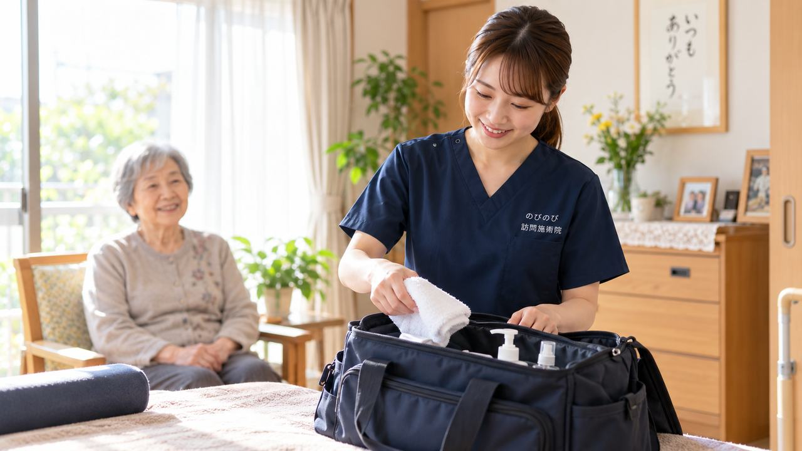

院の中で働いているときは、必要なものが棚にあります。訪問はそうはいきません。忘れたら取りに戻ることになり、その日の予定がずれます。持ち物の組み方は、訪問に移った人が最初につまずくところでもあります。実際に一日持ち歩いているものを、目的ごとに分けて書きます。これから訪問を考えている方が、荷物の重さと中身をだいたい想像できるように書いたつもりです。
施術の道具
鍼は使い捨てのものを使います。長さと太さを何種類か持ちます。訪問先は高齢の方が多く、細くて短いものを使う場面が院の中より増えます。数は、その日に回る軒数から少し余裕を持たせておきます。
お灸は台座のついたものが扱いやすいです。火を使うので、着火するもの、灰を受けるもの、消したあとを入れる小さな容器まで含めて一組と考えます。畳の上やベッドの脇で行うことになるので、灰を落とさない用意がいります。
使い終わった鍼を入れる専用の容器は、必ず持ちます。鍼は感染性の廃棄物として扱うものなので、その場のごみ箱に捨てることはできません。容器に入れて持ち帰り、決められた方法で処理します。ここは訪問でいちばん気をつけるところです。
手技だけで行う場面もあるので、粉やクリームを使う方は自分に合うものを。においが強いものは、寝室で使うことを考えると避けたほうが無難です。
衛生と感染対策のもの
手指の消毒薬は、ポケットに入る大きさのものを持ちます。玄関に入る前、施術の前、施術のあと。一日で何度も使います。訪問先に置いてあるものを借りるのではなく、自分の分を持つのが基本です。
皮膚を拭くための消毒綿、手袋、マスク。手袋はその方の状態に応じて使います。マスクは予備を入れておきます。体調のよくない方のお宅にうかがう日もあるので、自分と相手の両方を守る意味があります。
タオルとシーツも持ちます。ご家庭のものを毎回お借りするわけにはいかないので、体にかけるもの、下に敷くものを人数分。洗濯の手間はありますが、ここは省かないほうがいいところです。
体の状態を確かめるもの
訪問では、施術に入る前にその日の状態を確かめます。血圧計、体温計、指にはさんで測るもの。数字を見て、今日は施術を控えたほうがいいと判断することもあります。院の中なら誰かに相談できますが、訪問はその場で自分が決めます。だから測る道具は持っておきます。
関節の動く範囲や、むくみの程度を記録するための巻尺を入れている人もいます。前回と比べられると、報告書に書けることが変わってきます。
記録と書類
のびのびは施術の記録と報告書をスマートフォンで入力する形にしています。持ち歩くのは端末とモバイルバッテリーです。一日回っていると電池が減るので、これは実務上かなり大事な持ち物です。
紙で持つものもあります。同意書の控え、はじめての方にお渡しする案内、名刺。ご家族が留守で、あとで読んでいただくために置いていくこともあります。
それから、その日に回る順番と住所が分かるもの。端末で見られますが、電池が切れたときに困るので、紙に書いておく人もいます。
移動と、自分の身だしなみ
のびのびでは社用車か電動自転車、バイクで回ります。自転車やバイクの日は雨具が要ります。荷物を濡らさないためのカバーも。夏は水分と、汗を拭くもの。冬は手をあたためるもの。手が冷えたまま人の体に触れるわけにはいかないので、これは身だしなみのうちです。
靴を脱いで上がるので、靴下は清潔なものを。予備を入れている人もいます。爪を短くしておくこと、においに気をつけること。道具以前の話ですが、毎日のことなので書いておきます。
上がらせていただくときに靴をそろえること、荷物を置く場所を勝手に決めないこと。持ち物ではありませんが、持ち物と同じくらい見られているところです。
荷物は、軽くしたほうが続きます
はじめのうちは、不安であれもこれも入れたくなります。ただ、一日に何軒も回って、階段を上がって、また自転車に乗る。重い荷物は体にきます。何日か回ると、自分に要るものと要らないものが分かってきます。
のびのびでは同行研修から始めるので、先輩のカバンを見ていただけます。何を入れているか、どこに何をしまっているか。聞いてもらえれば、そのまま真似していただいて構いません。研修の流れは鍼灸師がブランク・未経験から復帰するには｜研修とサポートにまとめました。
消耗品の扱いや端末のことは、院によって違います。のびのびでの扱いについては、面接のときにお尋ねください。一日の動き方そのものは訪問鍼灸マッサージ師の一日｜働くある日の流れでご覧いただけます。
よくある質問
Q使い終わった鍼はどうやって処理しますか。
A専用の容器に入れて持ち帰り、感染性廃棄物として決められた方法で処理します。訪問先のごみ箱に捨てることはできません。容器は必ず持って出ます。
Qタオルやシーツは自分で用意しますか。
A体にかけるもの、下に敷くものは持参します。ご家庭のものを毎回お借りする形にはしていません。
Q血圧計なども持ち歩くのですか。
A持ちます。施術に入る前に状態を確かめ、その日は控えたほうがよいと判断することもあります。訪問はその場で自分が決めるので、測る道具は欠かせません。
Q記録は紙ですか、それとも端末ですか。
Aスマートフォンで入力する形にしています。複雑な操作は必要ありません。一日回ると電池が減るので、モバイルバッテリーは持っておくと安心です。
Q荷物はどれくらいの重さになりますか。
A慣れてくると、肩から下げられる大きさの一つにまとまります。はじめは多めに持ちたくなりますが、何日か回ると自分に要るものが絞れてきます。
Q道具は院から支給されますか。
A院によって扱いが違います。のびのびでの消耗品や端末の扱いについては、面接のときにお尋ねください。制服は貸与しています。